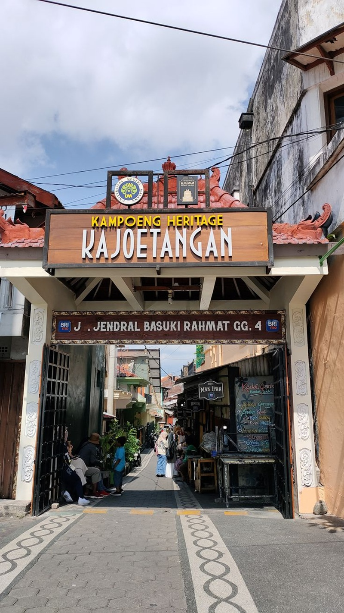
SejarahJejak Arsitektur Kolonial Kayutangan
📍 Kayutangan Heritage, Kota Malang
Bukan sekadar tempat foto, Kayutangan menyimpan deretan rumah tua bertema ornamen Indische Empire dan kolonial awal abad 20.
Menjelajahi asal-usul tanah Arema, narasi lokal, arsitektur kolonial, ruang cangkruk otentik, dan kuliner legendaris.
Mengenal akar sejarah peradaban kuno hingga terbentuknya Bumi Malang.
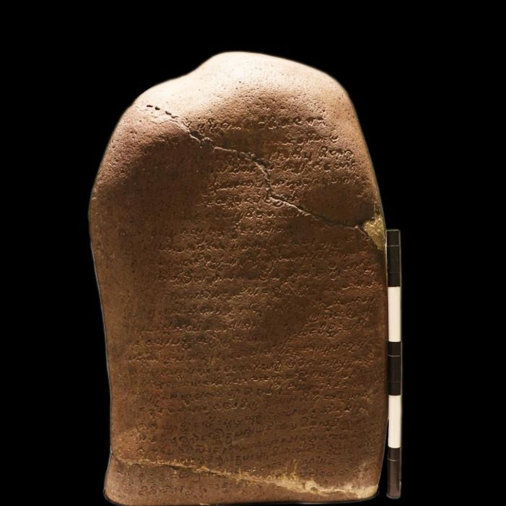
Sejarah Malang berakar jauh sebelum era kolonial, dimulai dari munculnya Kerajaan Kanjuruhan pada abad ke-8 sebagaimana tertulis dalam Prasasti Dinoyo bertarikh 760 Masehi. Nama "Malang" sendiri berasal dari kata Malangkuçeçwara yang tertulis pada lambang kota.
Kata Malangkuçeçwara terdiri dari tiga kata: Mala (kebatilan/kejahatan), Angkuça (menghancurkan/membinasakan), dan Içwara (Tuhan). Sehingga Malangkuçeçwara mengandung filosofi mendalam: "Tuhan telah menghancurkan yang batil dan menegakkan yang hak."
Simbol kebanggaan, solidaritas, dan kultur unik masyarakat Malang.
Bagi warga Malang, Arema (Arek Malang) bukan sebatas klub sepak bola, melainkan lambang identitas, kebanggaan, solidaritas, dan napas pantang menyerah. Karakter warga Malang yang lugas, hangat, dan kompak terpatri kuat dalam naungan lambang Singo Edan.
Di samping itu, Malang memiliki bahasa unik bernama Boso Walikan (O bahasa). Bahasa terbalik ini diciptakan oleh para pejuang kemerdekaan Malang (GRIL) pada era 1940-an sebagai kode sandi rahasia agar strategi perjuangan tidak diketahui oleh mata-mata Belanda. Hingga kini, kata seperti "Ayas" (Saya), "Umak" (Kamu), dan "Ngalup" (Pulang) tetap diwariskan secara lekat dalam pergaulan sehari-hari.
Merekam jejak arsitektur tempo dulu, kearifan lokal, dan tradisi seni rakyat.

Sejarah📍 Kayutangan Heritage, Kota Malang
Bukan sekadar tempat foto, Kayutangan menyimpan deretan rumah tua bertema ornamen Indische Empire dan kolonial awal abad 20.
 Budaya
Budaya
Mengulik kearifan lokal para perajin pahat kayu dan penari topeng tradisional yang menjaga tradisi pewayangan khas Malang.
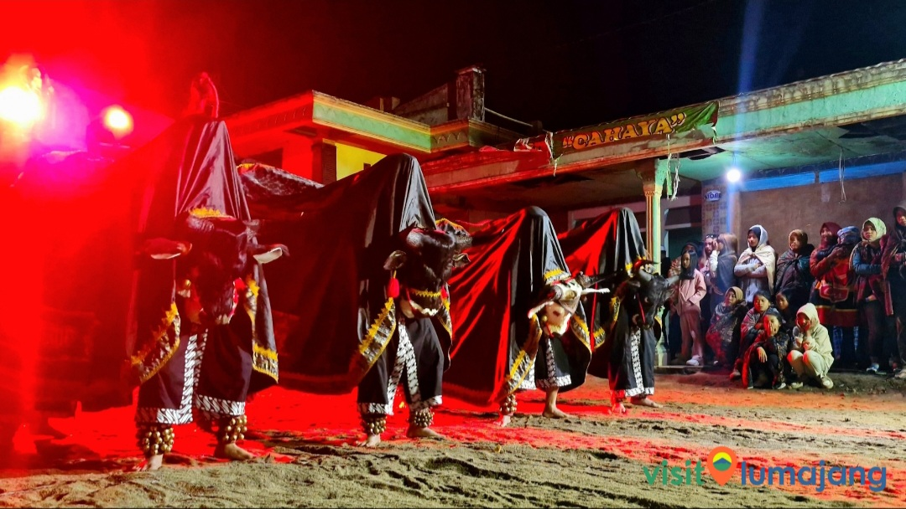
KomunitasAtraksi seni pertunjukan rakyat khas Malang yang memadukan tarian pertunjukan, musik gending, dan silat tradisional.
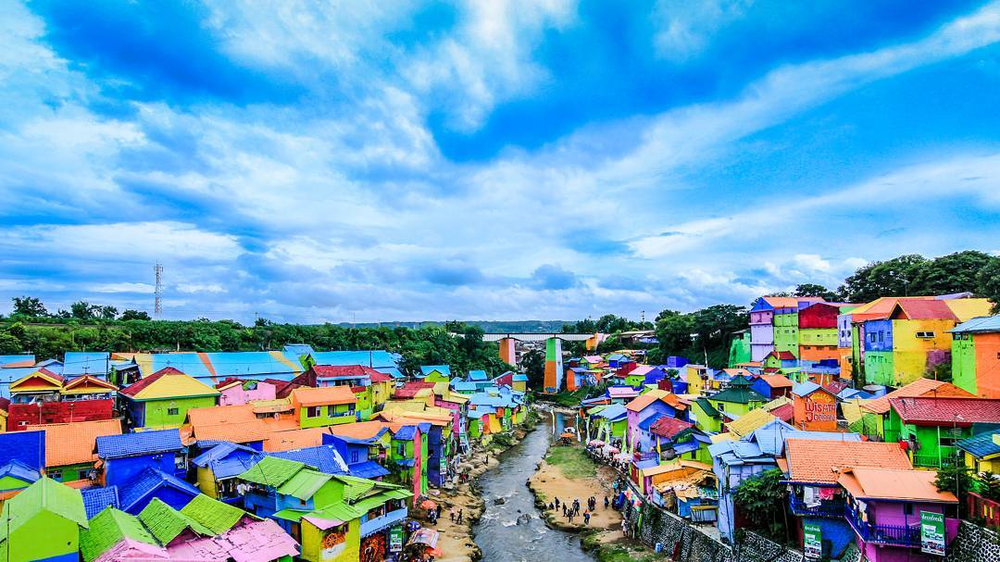
KreatifTransformasi kreatif bantaran Sungai Brantas di jantung Kota Malang dari pemukiman padat menjadi destinasi wisata kampung pelopor mural.
 Heritage
Heritage
Menjelajah lorong-lorong pemukiman tua di tengah kota yang merawat keaslian sumur kuno, lumbung warga, dan kehangatan interaksi tempo dulu.
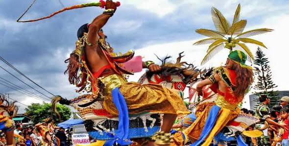
BudayaEksplorasi mendalam mengenai seni pertunjukan tradisional Kuda Lumping yang khas dari Bumi Arema.
Menelusuri mahakarya arsitektur masa lalu yang masih berdiri kokoh menghiasi Kota Malang.
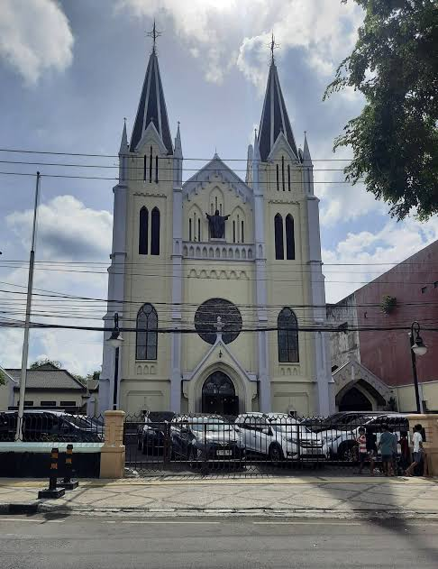
Neo-Gotik📍 Jl. MGR Sugiyopranoto, Kota Malang
Mahakarya arsitektur bergaya neo-gotik peninggalan kolonial di kawasan Kayutangan yang sangat megah dan fotogenik.
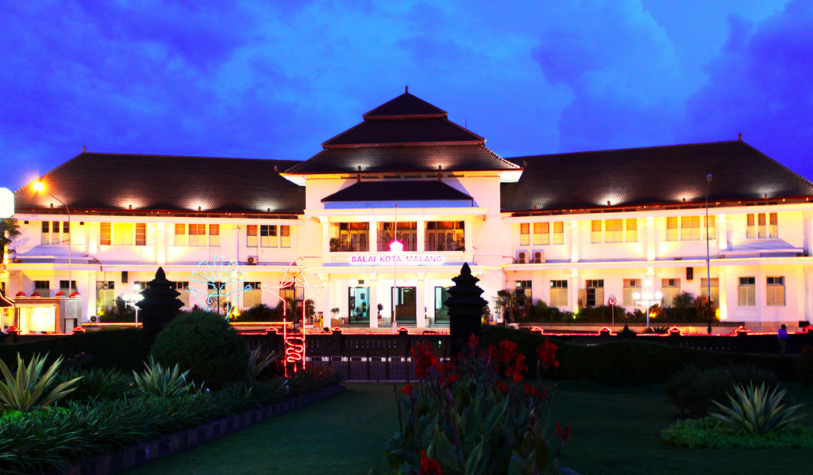
Art DecoGedung ikonik pusat pemerintahan Kota Malang dengan perpaduan arsitektur kolonial dan taman dikelilingi Kolam Teratai.
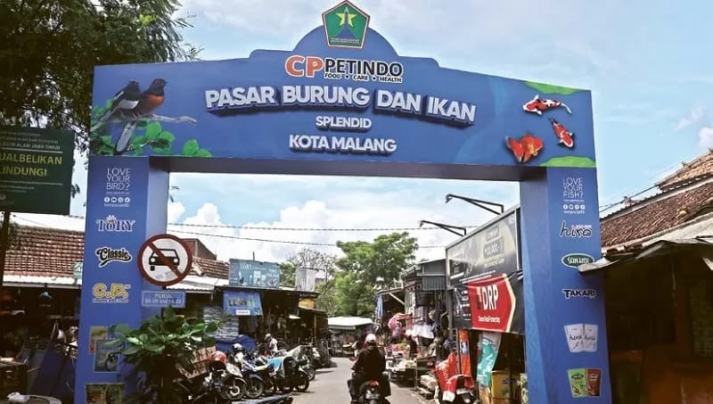
HeritageDeretan kawasan klasik di pinggir Sungai Brantas pusat kota yang sejak dulu terkenal asri sebagai pusat tanaman hias dan burung.
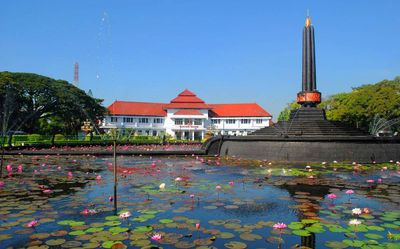
Ikon KotaTugu bersejarah di tengah bundaran depan Balai Kota Malang yang dikelilingi kolam teratai sebagai lambang kemerdekaan.
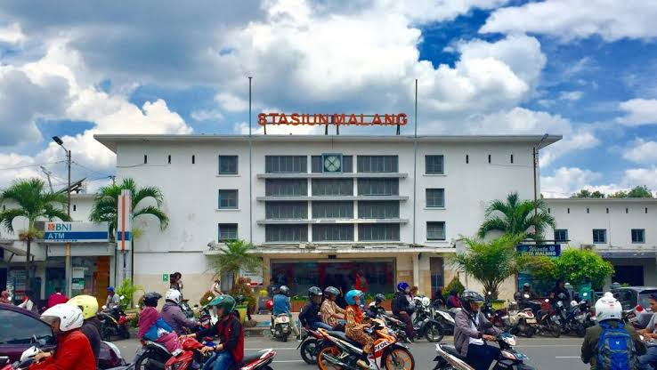
IndischeStasiun kereta api bersejarah peninggalan Staatsspoorwegen yang memadukan arsitektur modern awal abad ke-20 di pusat kota.
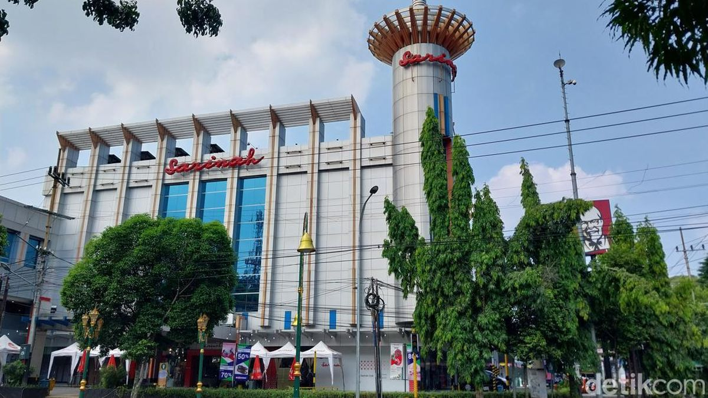
Retro 70an📍 Jl. Basuki Rahmat, Kota Malang
Saksi sejarah pusat perbelanjaan modern awal di Kota Malang yang mempertahankan corak arsitektur retro perkotaan.
Cari tempat diskusi, ngobrol santai, atau menikmati suasana khas Kota Malang.
Ragam kuliner legendaris Kota Malang yang bertahan menembus zaman.
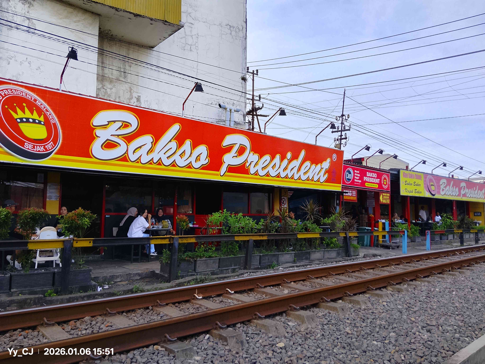
Legendaris📍 Jl. Batanghari No.5, Kota Malang
Sensasi unik menikmati kuah bakso sapi gurih khas Kota Malang tepat di samping jalur rel kereta api aktif.
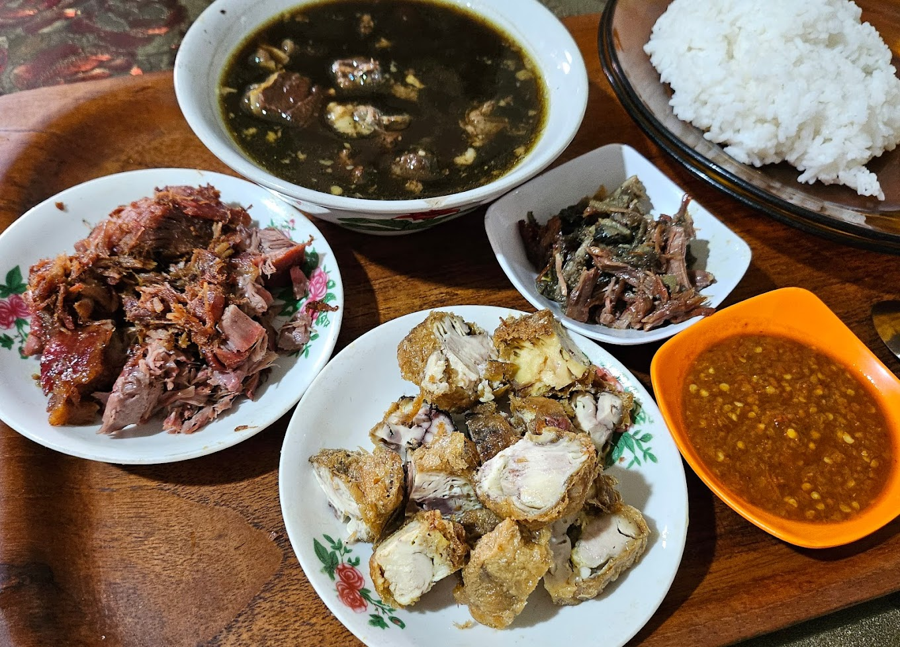
Otentik📍 Jl. Panglima Sudirman, Kota Malang
Kuah hitam pekat kaya rempah kluwek pilihan di wilayah Kota Malang dengan daging empuk bertabur kecambah pendek segar.
 Kota Malang
Kota Malang
Sajian es legendaris di Jalan Dempo Kota Malang dengan perpaduan alpukat melimpah, nangka, dan kelapa muda.
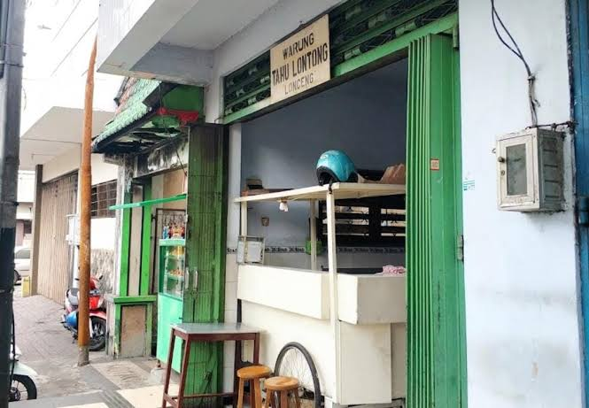
Sejak 1950📍 Jl. Laksamana Martadinata, Kota Malang
Kuliner malam legendaris dekat kawasan Alun-Alun Kota Malang yang menyajikan tahu telur dengan petis kacang khas.
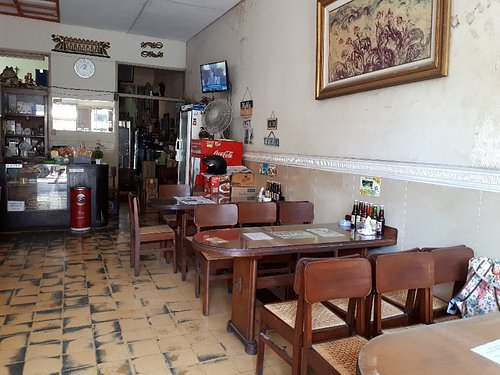
Legendaris Sejak 1946📍 Jl. KH Ahmad Dahlan, Kota Malang
Menikmati cwie mie legendaris dan es josss segar berbalut suasana interior klasik tempo dulu di jantung Kota Malang.
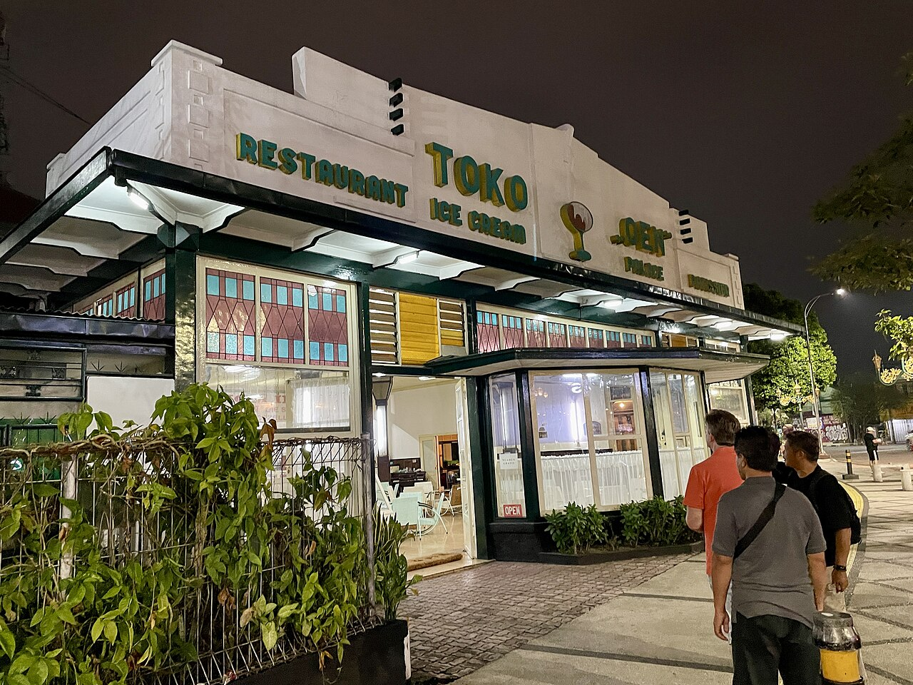
Kolonial📍 Jl. Jenderal Basuki Rahmat, Kota Malang
Menikmati suasana interior tempo doeloe di Jalan Basuki Rahmat Kota Malang sembari menyantap es krim resep asli sejak 1930.